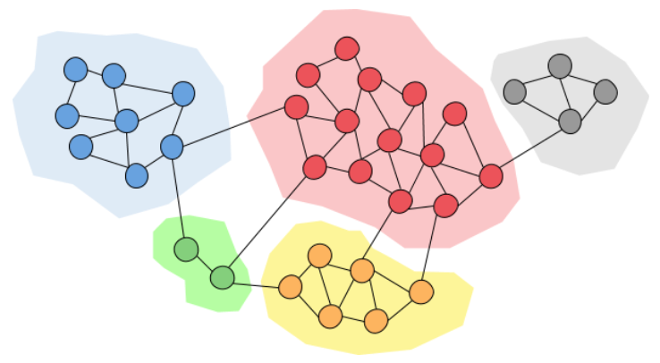
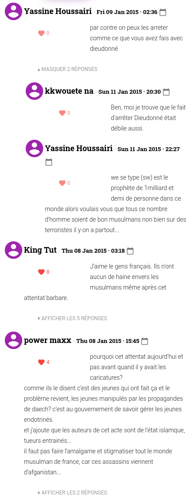
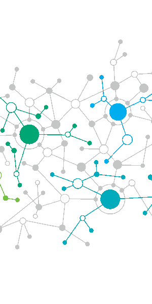
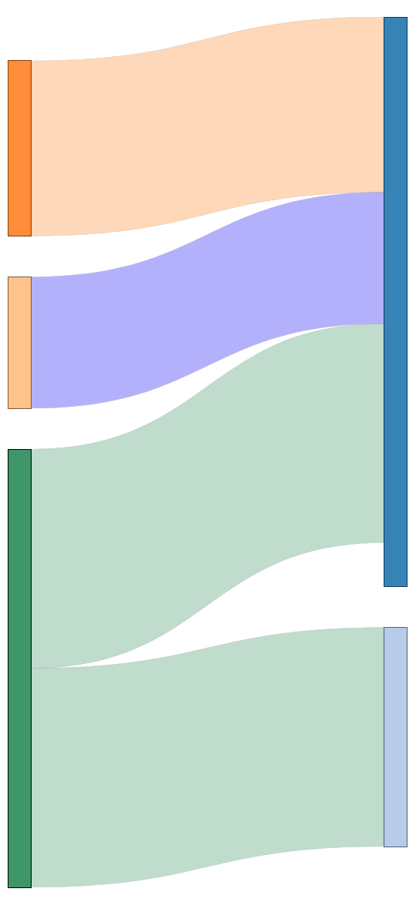
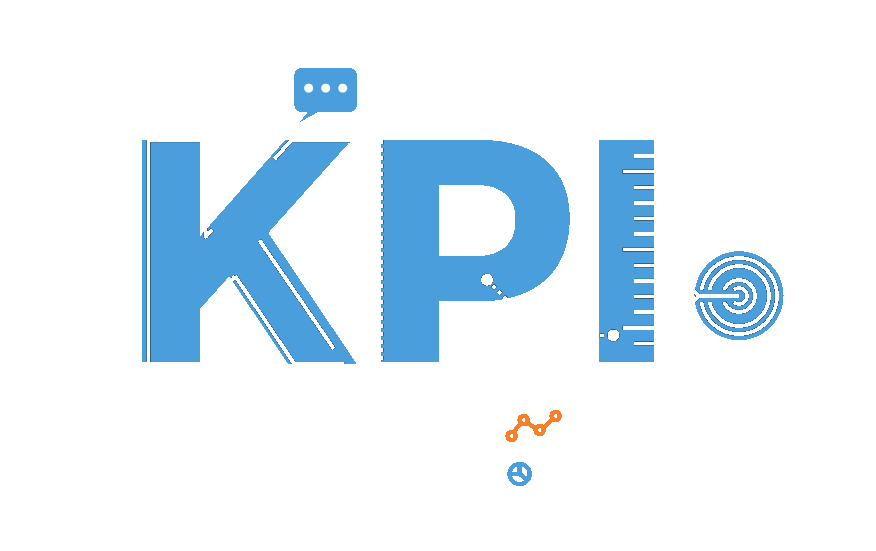

class: mainpage name: accueil # # Community dynamics analysis ## Lab-STICC (CNRS, UMR 6285) ### Cécile Bothorel, Laurent Brisson --- layout:true .footer[ # Community dynamics analysis ## [DECIDE](https://labsticc.fr/en/teams/decide) TEAM, [Lab-STICC](https://labsticc.fr/en) Laboratory (CRNS, UMR 6285) ## [Cécile Bothorel](https://www.imt-atlantique.fr/fr/personne/cecile-bothorel), [Laurent Brisson](http://www.laurent-brisson.fr/) .logo-labsticc[] ] --- name: grid-layout .header[ # Community Definition ] The term community is used here in the sense used in the field of **social network analysis**. ## Definition It is a grouping of individuals created by applying a clustering algorithm that maximizes interactions within groups and minimizes interactions between groups.  --- name: grid-layout .header[ # Analysis Process ] <center><span class="green">Business</span> Tasks and <span class="blue">Data Scientist</span> Tasks</center> <div class="container-5x2"> <div class="row1col1 flex"> <i class="fa-duotone fa-square-1 green" fa-3x></i> Discussion Threads </div> <div class="row1col2 flex"> <i class="fa-duotone fa-square-2 blue" fa-3x></i> Interactions Graphs </div> <div class="row1col3 flex"> <i class="fa-duotone fa-square-3 blue" fa-3x></i> Evolving Communities </div> <div class="row1col4 flex"> <i class="fa-duotone fa-square-4 green" fa-3x></i><i class="fa-duotone fa-square-4 blue" fa-3x></i> Metrics Computation </div> <div class="row1col5 flex"> <i class="fa-duotone fa-square-5 green" fa-3x></i> Business Interpretation </div> <div class="row2col1 flex">  </div> <div class="row2col2 flex">  </div> <div class="row2col3 flex">  </div> <div class="row2col4 flex">  </div> <div class="row2col5 flex"> <img src="images/analyst.png" style="width:100px;"> </div> </div> --- name: grid-layout .header[ # Metrics and analysis levels ] ## Differents kinds of metrics <div class="container-2x3"> <div class="row1col1 flex" style='font-weight: bold;'> <i class="fa-duotone fa-messages-question green" fa-3x></i> Use metrics </div> <div class="row2col1 flex" style='font-weight: bold;'> <i class="fa-duotone fa-hashtag green" fa-3x></i> Context-dependant metrics </div> <div class="row3col1 flex" style='font-weight: bold;'> <i class="fa-duotone fa-chart-network blue" fa-3x></i> Topological metrics </div> <div class="row1col2 flex" style="text-align:left;"> Number of members, messages<br> Answer time, duration of threads </div> <div class="row2col2 flex"> Toxicity levels<br> Topics </div> <div class="row3col2 flex"> Static: hub dominance, clustering coefficiant<br> Dynamic: events, communities evolutions </div> </div> ## Different levels of analysis - static communities (over a given period) - evolving communities (over time) - platform --- name: grid-layout .header[ # Focus on Topological metrics ] .left-column50[ ## Community structures ### (On one period)  <div style="font-size: x-small; line-height: 1.5;">Vinh-Loc Dao. Characterizing community detection algorithms and detected modules in large-scale complex networks. Data Structures and Algorithms. Ecole nationale supérieure Mines-Télécom Atlantique, 2018. <a href="https://tel.archives-ouvertes.fr/tel-02121358">https://tel.archives-ouvertes.fr/tel-02121358</a></div> ] .right-column50[ ## Community evolution forms ### (Between two periods)  <div style="font-size: x-small; line-height: 1.5;">Palla, G., Barabási, AL. & Vicsek, T. Quantifying social group evolution. Nature 446, 664–667, 2007. <a href="https://doi.org/10.1038/nature05670">https://doi.org/10.1038/nature05670</a></div> ] --- name: grid-layout .header[ # Some of our Applications ] ## Backer profiles on the Ulule crowdfunding platform Analysis of the static structure of the platform's community to detect different profiles of backers: sponsors, pre-cursors, experts, followers, etc. <div style="font-size: x-small; line-height: 1.5;">Inna Lyubareva, Laurent Brisson, Cécile Bothorel, Romain Billot. Une plateforme de crowdfunding et son réseau social : L'exemple Ulule. Revue Française de Gestion, Lavoisier, 2020, Les mutations de l’accompagnement entrepreneurial, 1 (286), pp.135--151. <a href="https://dx.doi.org/10.3166/rfg.2019.00402">https://dx.doi.org/10.3166/rfg.2019.00402</a></div> ## Learner profiles on the squily e-learning platform Detection of student behavioral profiles and analysis of posture changes to understand community dynamics in peer review. <div style="font-size: x-small; line-height: 1.5;">Raphaël Charbey, Laurent Brisson, Cécile Bothorel, Philippe Ruffieux, Serge Garlatti, et al.. Roles in social interactions: graphlets in temporal networks applied to learning analytics. COMPLEX NETWORKS 2019 : 8th International Conference on Complex Networks and their Applications, Dec 2019, Lisbon, Portugal. <a href="https://dx.doi.org/10.1007/978-3-030-36683-4_41">https://dx.doi.org/10.1007/978-3-030-36683-4_41</a></div> ## Detection of echo chambers on YouTube media channels Dynamic analysis of community structures to detect inward-looking communities by excluding members with differing opinions. <div style="font-size: x-small; line-height: 1.5;">Project funded by the French National Research Agency. <a href="http://www.anr-pil.org/">http://www.anr-pil.org/</a></div>
MathJax.Hub.Configured();